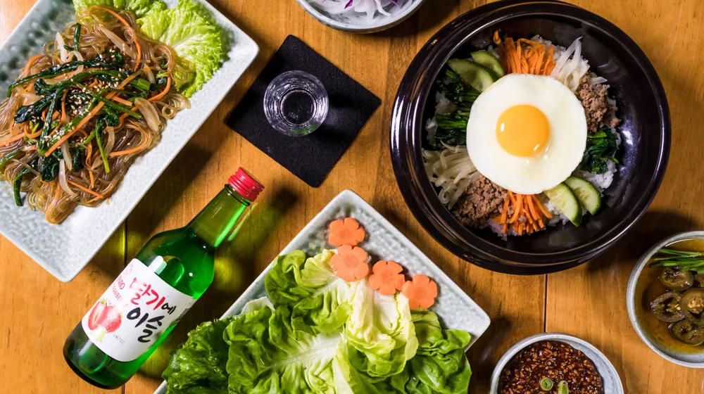

막걸리 종류별 찰떡궁합 안주 조합 5가지: 실패 없는 페어링 비법
사진: Cup of Couple / Pexels (무료 이미지, 출처 표기)
막걸리 안주 페어링, 왜 중요할까요?

막걸리는 한국인의 오랜 벗이자 즐거움을 주는 전통주입니다. 하지만 어떤 안주와 함께하느냐에 따라 그 맛과 경험이 크게 달라질 수 있습니다. 흔히 막걸리 안주로 파전이나 두부김치를 떠올리지만, 막걸리에도 다양한 종류가 있어 각각의 특징에 맞는 안주를 고르는 것이 중요합니다. 올바른 페어링은 막걸리의 풍미를 극대화하고, 안주의 맛을 더욱 돋보이게 합니다.
막걸리 특유의 탄산감, 달콤함, 신맛, 그리고 고소함은 안주의 맛과 균형을 이루거나 대비를 통해 새로운 미식 경험을 선사합니다. 이 글에서는 다양한 막걸리 종류에 어울리는 안주 조합을 살펴보고, 나아가 실패 없는 페어링 노하우까지 알려드립니다.
막막하기만 한 막걸리 안주, 종류별로 찾아보세요!
막걸리는 크게 생막걸리(살아있는 효모가 있는 탁주), 살균막걸리(살균 처리하여 유통기한이 긴 막걸리), 그리고 맑은 막걸리(막걸리를 걸러 맑게 만든 청주 계열) 등으로 나눌 수 있습니다. 각각의 특징에 맞춰 안주를 고르면 더욱 깊이 있는 맛의 조화를 느낄 수 있습니다. 2026년 10월 기준으로 가장 대중적인 막걸리 종류와 어울리는 안주 조합을 소개합니다.
막걸리 안주 페어링, 이것만 기억하세요!
성공적인 막걸리 안주 페어링을 위한 세 가지 중요한 팁을 알려드립니다. 이 팁들을 활용하면 어떤 막걸리든 찰떡궁합 안주를 찾을 수 있습니다.
1. 맛의 균형을 맞추세요
막걸리의 맛이 강하다면 상대적으로 담백한 안주를, 막걸리가 부드럽다면 감칠맛 나는 안주를 선택하여 맛의 균형을 맞추는 것이 중요합니다. 예를 들어, 산미가 강한 막걸리에는 기름진 전 종류가 잘 어울려 맛을 중화시켜줍니다.
2. 식감의 조화를 고려하세요
바삭한 안주와 부드러운 막걸리, 혹은 쫄깃한 안주와 시원한 막걸리처럼 식감의 대비나 조화도 중요합니다. 입안에서 막걸리와 안주가 어우러질 때의 즐거움을 더해줍니다.
3. 계절감과 온도를 생각하세요
따뜻한 전골이나 탕 종류는 추운 날씨에 차가운 막걸리와 좋은 궁합을 이루며, 신선한 채소나 과일은 더운 여름날 시원한 막걸리와 잘 어울립니다. 막걸리를 마시는 계절과 장소에 따라 안주를 선택하는 것도 좋은 방법입니다.
막걸리 안주, 의외로 피해야 할 조합은?
모든 음식에 어울릴 것 같은 막걸리지만, 의외로 피해야 할 조합도 있습니다. 다음 음식들은 막걸리의 맛을 해치거나 궁합이 좋지 않을 수 있으니 참고하세요.
- 지나치게 강한 향신료 음식: 고수나 카레처럼 향이 강한 음식은 막걸리의 섬세한 풍미를 가릴 수 있습니다. 막걸리 본연의 맛을 즐기기 어렵게 만들 수 있습니다.
- 과도하게 짠 음식: 염분이 높은 음식은 갈증을 유발하여 막걸리를 더 많이 마시게 하거나, 짠맛 때문에 막걸리의 단맛이나 신맛을 제대로 느끼지 못하게 할 수 있습니다.
- 아주 달콤한 디저트: 이미 단맛이 있는 막걸리와 단 디저트가 만나면 맛이 서로 충돌하거나 쉽게 물릴 수 있습니다. 가향 막걸리(밤, 옥수수 등)는 예외적으로 단 디저트와 어울릴 수 있습니다.
나만의 막걸리 안주 페어링, 이렇게 찾아보세요
위에 제시된 가이드라인은 시작점일 뿐입니다. 막걸리 안주 페어링의 가장 큰 즐거움은 자신만의 최적 조합을 찾아가는 과정에 있습니다. 다음 방법들을 통해 당신만의 완벽한 페어링을 발견해보세요.
- 다양한 막걸리 시음: 여러 종류의 막걸리를 맛보며 각 막걸리의 특징(단맛, 신맛, 탄산감, 질감 등)을 파악합니다.
- 안주 실험: 평소 좋아하는 음식들을 막걸리와 함께 시도해보고, 어떤 조합이 가장 좋았는지 기록합니다. 간단한 김치 한 조각도 훌륭한 안주가 될 수 있습니다.
- 전문가 추천 참고: 막걸리 전문점이나 전통주 바에서 추천하는 메뉴를 주문하여 그들의 페어링 노하우를 엿보는 것도 좋은 방법입니다.
- 재료의 신선함: 어떤 안주든 신선한 재료로 만들었을 때 막걸리와의 조화가 더욱 빛을 발합니다. 제철 식재료를 활용해보세요.
막걸리 안주 페어링은 정답이 정해져 있지 않습니다. 자신만의 취향을 탐구하고 즐기는 과정 자체가 특별한 경험이 될 것입니다. 이 글이 여러분의 막걸리 한상을 더욱 풍성하게 만드는 데 도움이 되기를 바랍니다. 정확한 사항은 막걸리 제조업체나 전문 주점의 권장 사항을 다시 확인하시길 권장합니다.
🔗 이 글도 함께 보면 좋아요: 막걸리 안주 페어링, 실패 없이 즐기는 3단계 비법!
관련 추천 상품
막걸리 잔, 막걸리 주전자, 막걸리 세트 관련 인기 상품 보러가기
이 포스팅은 쿠팡 파트너스 활동의 일환으로, 이에 따른 일정액의 수수료를 제공받습니다.